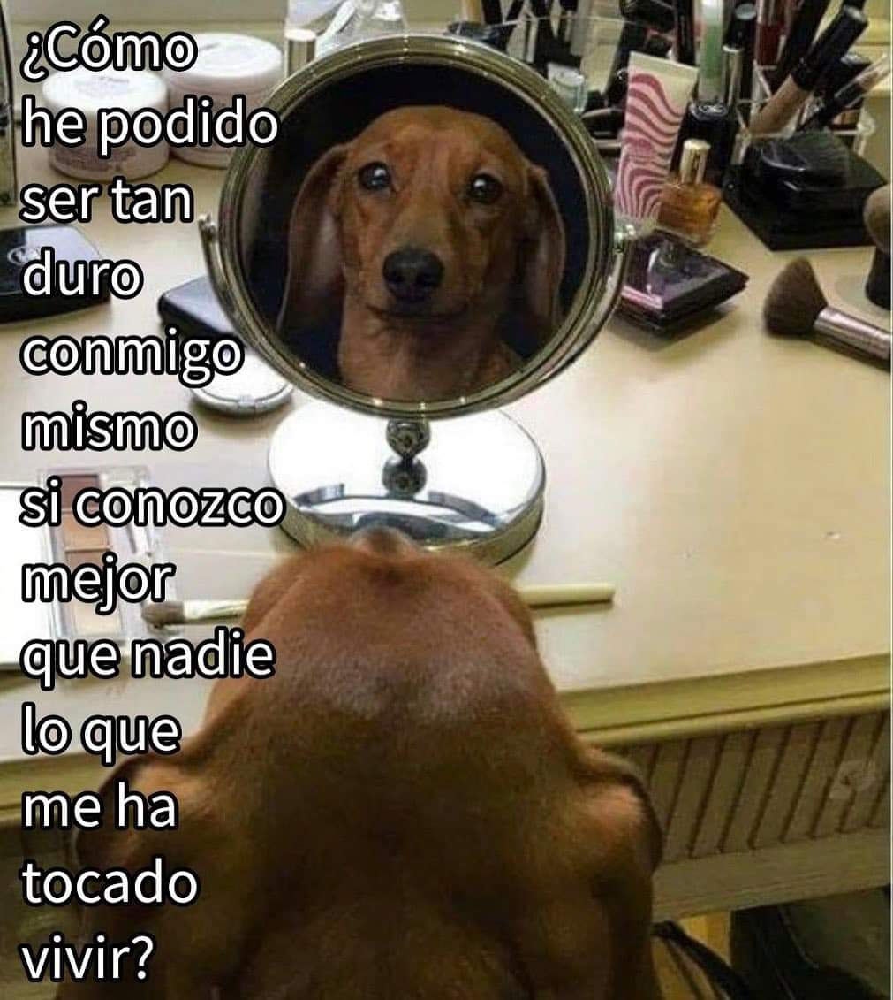

Sobre mi: Jocelyn Peña

<3
Esta imagen me gusta mucho porque me recuerda
que debemos cuidar nuestro dialogo interno, asi como ser amables y
pacientes con nosotros mismos.
<3
Biografía
Nací el 7 de mayo en la CDMX. Mi padre se llama Armando y mi madre es Isela, y tengo un hermano, del cual
yo soy la mayor. Crecí en CDMX. Los estudios universitarios los realicé en la Facultad de Ingeniería, UNAM.
Mayor logro
El mayor logro personal es tener paz mental y para esto es esencial aceptarse a sí mismos, así como las acciones
en el pasado, lo que son en el presente y los procesos futuros.
Todo aquello que resta tranquilidad y agrega preocupaciones es todo lo contrario a la paz mental, y es un
problema sin resolver.
Bebidas favoritas
- Té de limón
- Café capuchino
- Jugo de naranja
- Agua de limón
- Refresco
- Jugo de mango
Música favoritas
- Kiss - I Was Made For Lovin' You
- Blondie - Call Me
- Nirvana
- Smells Like Teen Spirit
- Metallica:
Nothing Else Matters
- AC/DC -
Highway to Hell
Explicación de términos
- Función
-
Es un fragmento de código que puede ser invocado para realizar tareas o devolver un resultado.
- Let
-
Se utiliza para declarar una variable con alcance de bloque.
- Const
-
Se utiliza para definir variables, el cual no puede ser sobreescrito o reasignado.
- Etiqueta: "blockquote"
-
Se usan para indicar que el contenido es texto citado.
- Etiqueta: "embed"
-
Usada para integrar una aplicación o contenido interactivo externo que no suele ser HTML.
- Etiqueta: "label"
-
Se usa para definir el nombre o título de un control del formulario.
Lista del super
- Despensa
- Frescos
- Verduras
- Aguacate
- Jitomate
- Cebolla
- Calabaza
- Nopales
- Frutas
- Piña
- Manzana
- Platano
- Manzana
- Limpieza
- Farmacia
- Medicamento
- Talco
- Desodorante